Initialtopologie als gröbste Topologie für die Stetigkeit der Abbildungen
1. Satz
Sei  eine Menge und
eine Menge und
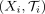
eine Familie von topologischer Räumen mit jeweils einer Abbildung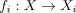
Dann ist die Initialtopologie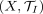
die gröbste Topologie, so dass die Familie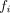
jeweils stetig ist2. Beweis
Sei
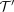
eine Topologie auf, so dass 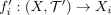
mit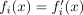
jeweils stetig ist. Dann lässt sich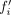
auf folgende Weise Faktorisieren.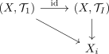
Nach Universeller Eigenschaft gilt, dass  stetig ist, da stetig ist.
Somit folgt aus der Aussage über die Feinere Topologie und Identitätsabbildung, dass
stetig ist, da stetig ist.
Somit folgt aus der Aussage über die Feinere Topologie und Identitätsabbildung, dass
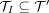
, d.h.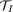
ist gröber